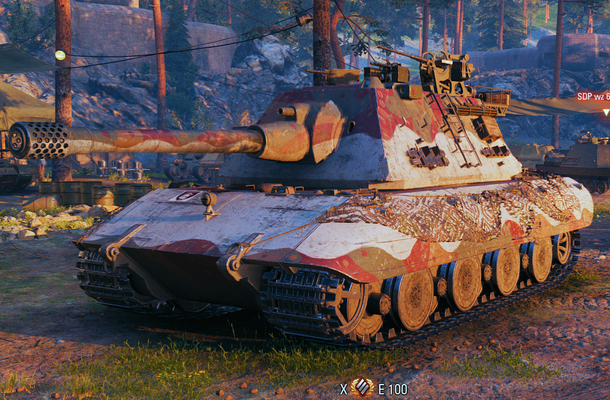

Уявіть собі танк, що виглядає як середньовічна фортеця на гусеницях і важить як три слони. Ось він, легендарний E-100 — броньований монстр, якому на сніданок подають снаряди калібру 150 мм. Це не просто танк, це рухома гроза, тільки в екіпажі щось пішло не так...
Підсумок: E-100 — це не просто танк, це життєвий досвід.